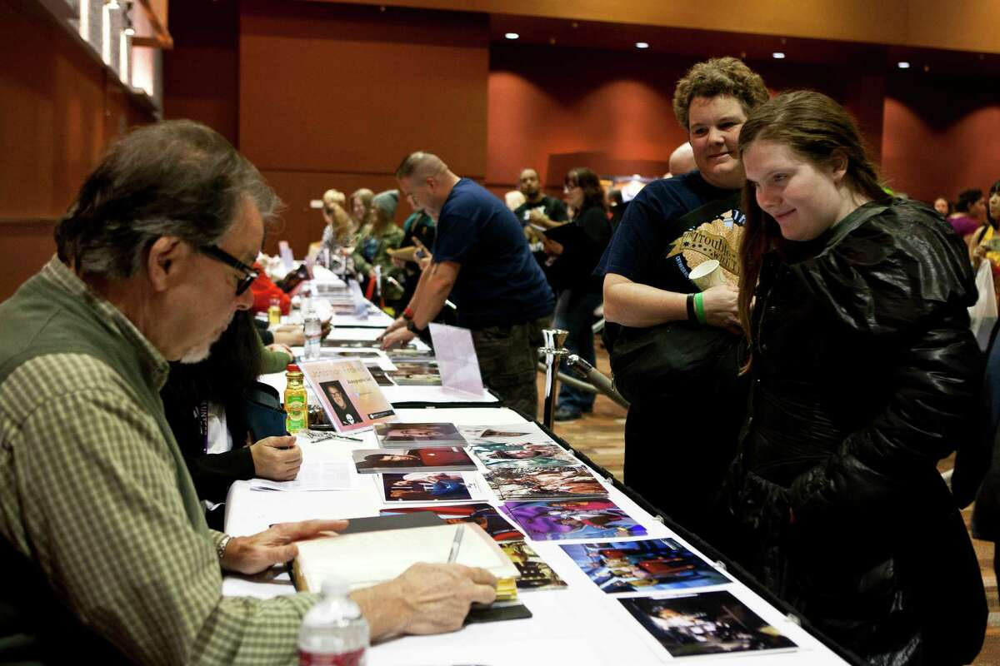

Star Trek has been a cult phenomenon for decades. Fans of the franchise are called "Trekkies" or "Trekkers". The franchise spans a wide range of spin-offs including games, figurines, novels, toys, and comics. From 1998 to 2008, there was a Star Trek–themed attraction in Las Vegas. At least two museum exhibits of props travel the world. The constructed language Klingon was created for the franchise. Several Star Trek parodies have been made, and viewers have produced several fan productions.
The political weight of the Star Trek fans made it possible to impose the name Enterprise for the first American space shuttle built for the NASA (OV-101), whereas this one was to be called Constitution in the beginning, after a massive campaign of letters organized by the aforementioned Bjo Trimble produced more than 200,000 requests to President Gerald Ford.
Many production staffers on the Star Trek franchise were self professed "Trekkies" (or "Trekkers", depending on one's point of view) and in the 1970s, early 1980's that was considered an asset as Star Trek: The Motion Picture Art Director Richard Taylor recalled, "To design the models for the show I hired an exceptional team of designers. First and foremost was Andy Probert. Andy was a true Star Trek expert and knew all the mythology of the series. I on the other hand was not a Star Trek fan." (Star Trek: Creating the Enterprise, p. 104) It even held true to some extent as late as 2009 when Conceptual Illustrator John Eaves became the only regular production staffer who had worked on prime universe Star Trek productions – excepting Industrial Light & Magic's staffers, who had previously worked on the Star Trek franchise and were still in the employment of the company at the time – to be officially hired and credited for J.J. Abrams' re-imagined Star Trek. Though Abrams steered clear from hiring any former Star Trek staffers in order to be as unencumbered as possible for his vision on the franchise, he was aware that some consistency needed to be observed, or as Production Designer Scott Chambliss has put it, "I brought John in because he knew the story and lore, what should and shouldn't be done. The ships in the Starfleet Armada to go to Vulcan were influenced by John's knowledge."
